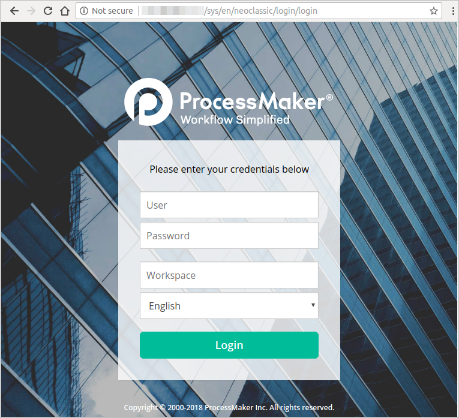
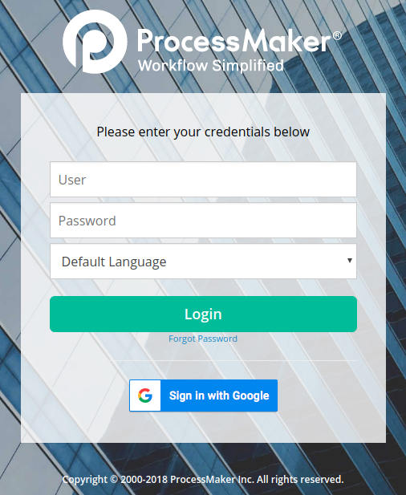
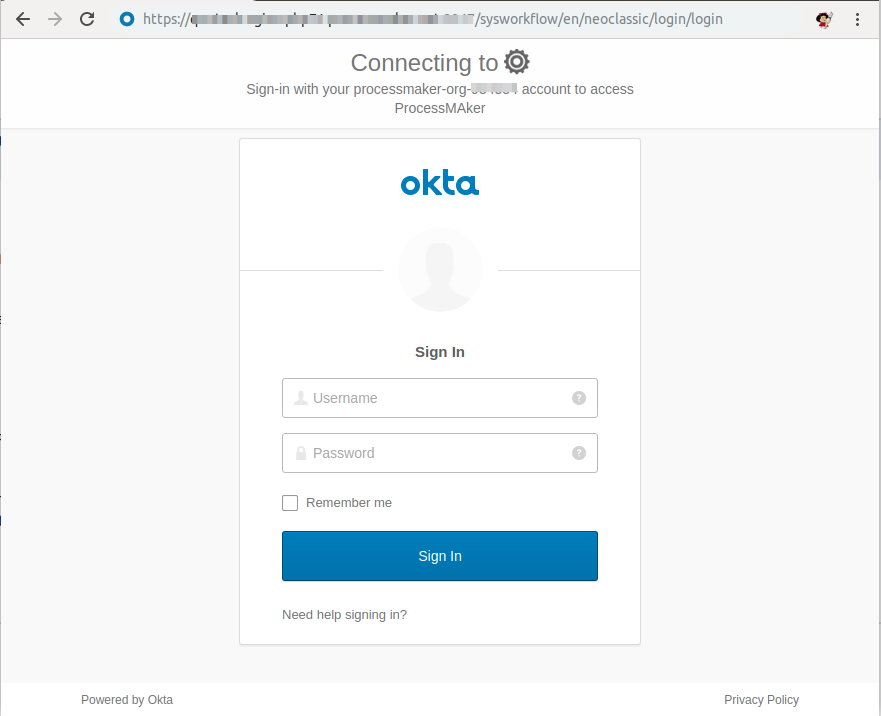
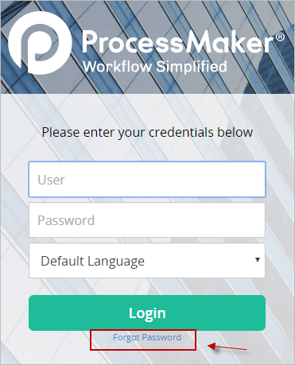
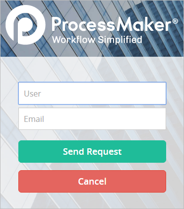
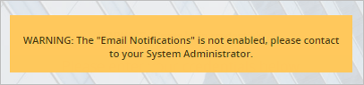
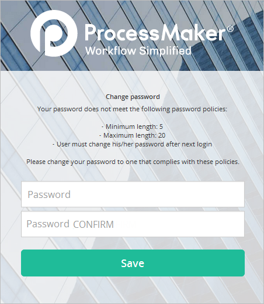
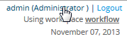
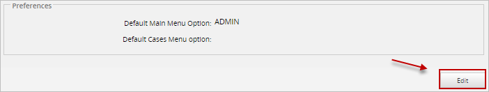

- Log On
- Log On to ProcessMaker Via the Standard Interface
- Log On Via Google Authentication Enterprise Plugin
- Log On via SAML Authentication Enterprise Plugin
- Configure the Logon Settings
- Access the Login Settings Screen
- Set the Default Language in the Logon Screen
- Enable Password Recovery
- Change the Default Destination After Logging On
- Logon Records
Log On
You can log on to ProcessMaker in different ways depending on whether you log on through the standard interface or through an Enterprise plugin.
Refer to the following sections that discuss different methods to log on to ProcessMaker:
- Standard interface Log on to ProcessMaker via the standard interface
- Google Authentication Use the Google Authentication plugin, which is an Enterprise plugin available for ProcessMaker version 3.3 and later. Note that your organization must have the Google Authentication plugin deployed.
- SAML Authentication Use the SAML Authentication plugin, which is an Enterprise plugin available for ProcessMaker version 3.4.0 and later. Note that your organization must have the SAML Authentication plugin deployed.
Log On to ProcessMaker Via the Standard Interface
Follow these guidelines to log on to ProcessMaker via the standard interface:
-
Enter the IP address (or domain name) and port number for the server or instance hosting ProcessMaker in a standard web browser.
-
http://<IP-ADDRESS>:<PORT>
For example, if running ProcessMaker at the IP address 192.168.1.110 from the port 3018, then enter:
-
http://192.168.1.110:3018
If only the IP address (or domain name) is included in the URL, the web browser automatically redirects to the ProcessMaker logon screen at:
-
http://<IP-ADDRESS>:<PORT>/sys/en/neoclassic/login/login.html
The logon screen displays.

-
-
Do one of the following:
-
a. If ProcessMaker was just installed, enter the following credentials to log on as the administrator:
- User: admin
- Password: admin
- Workspace: workflow
- b. If logging on as a user, enter your user name and password. If the workspace was not included in the URL, select the workspace. The default workspace is "workflow".
-
a. If ProcessMaker was just installed, enter the following credentials to log on as the administrator:
-
Select the default language to display ProcessMaker if additional languages have been installed to ProcessMaker. English is the default language.

-
Click Login.
Log On Via Google Authentication Enterprise Plugin
Note: To log on via Google authentication, your organization must have the Google Authentication Enterprise Plugin deployed. This plugin is only available for ProcessMaker Enterprise version 3.3.0 and later.
Follow these guidelines to log on to ProcessMaker via the Google Authentication:
-
Enter the IP address (or domain name), port number, workspace name, and the workspace’s default language for the server or instance hosting ProcessMaker in a standard web browser using the following URL.
-
http://<IP-ADDRESS>:<PORT>/sys<WORKSPACE>/<DEFAULT-LANGUAGE>/neoclassic/login/login.html
For example, if running ProcessMaker at the IP address 192.168.1.110 from the port 3018 using the workspace named BPMWORKSPACE, and using English as the default language, then enter:
-
http://192.168.1.110:3018/sysbpmworkspace/en/neoclassic/login/login.html
The logon screen displays.

-
-
Click Sign in with Google. If you are logged on to your Google account, Google authenticates you and passes your credentials to ProcessMaker. If you are not logged on to a Google account, see Sign in to Gmail.
Instead of clicking the Sign in with Google button, you can log on with your ProcessMaker credentials as described in Log on to ProcessMaker Via the Standard Interface.
Log On via SAML Authentication Enterprise Plugin
Note: To log on via SAML authentication, your organization must have the SAML Authentication Enterprise Plugin deployed. This plugin is only available for ProcessMaker Enterprise version 3.4.0 and later.
Follow these guidelines to log on to ProcessMaker via the SAML Authentication:
-
Enter the IP address (or domain name), port number, workspace name, and the workspace’s default language for the server or instance hosting ProcessMaker in a standard web browser using the following URL.
-
http://<IP-ADDRESS>:<PORT>/sys<WORKSPACE>/<DEFAULT-LANGUAGE>/neoclassic/login/login.html
For example, if running ProcessMaker at the IP address 192.168.1.110 from the port 3018 using the workspace named BPMWORKSPACE, and using English as the default language, then enter:
-
http://192.168.1.110:3018/sysbpmworkspace/en/neoclassic/login/login.html
-
-
The URL redirects to the IdP service (in this case, Okta). Depending on the Field Matching configuration, the logon screen displays.

In the Username and Password field, enter Okta credentials.
-
Click Sign in to log on to ProcessMaker.
Warning: If any problem occurs while trying to log on to ProcessMaker, the next error message displays:
SAML Auth Error: The user record is not found, please verify the settings with your System Administrator.SAM Auth Error: We found more than one record that matches with the description, please contact your System Administrator to fix this configuration.
Note that ProcessMaker Standard Logging stores all errors occurred.
The ProcessMaker Standard Logging stores the SAML logon as an INFO severity level and a message A user has logged using SAML SSO.
Disable the SAML authentication in the workspace to log on with your ProcessMaker credentials as described in Log on to ProcessMaker Via the Standard Interface.
Configure the Logon Settings
This section discusses how to configure the logon settings that affect the standard interface.
For information how to configure the settings for:
- The Google Authentication plugin that allows users to log on using their Google credentials, see Google Authentication Plugin.
- The SAML Authentication plugin that allows users to log on using their SAML provider credentials, see SAML Authentication Plugin.
Note: Users must have the PM_SETUP_LOGIN permission assigned to their role to access the ADMIN > Settings > Login option.
Refer to the following sections about the Login settings:
- Access the Login Settings Screen
- Set the Default Language in the Logon Screen
- Enable Password Recovery
Access the Login Settings Screen
To access the logon settings, go to ADMIN > Settings > Login. The Login Settings screen displays.

Set the Default Language in the Logon Screen
Use the Default Language option to select the language by default that displays in the logon screen. ProcessMaker is available by default only in English, but translation files for additional languages can be installed. This configuration must be set for each workspace.
To set the default language that displays in the logon screen for one workspace, follow these steps:
-
Access the Login settings.
-
Do one of the following:
-
Select the default language for that workspace from the Default Language drop-down.
-
Select Use the language of URL to allow the language setting in the logon URL to specify the default language setting. For example, the logon URL contain “en” for English language or “es” for Spanish language.
-
-
Click Save Settings.

Enable Password Recovery
By enabling this option, if a user forgets the password to log on to ProcessMaker, a link is displayed in the logon screen to send a new randomly-generated password to that user’s email account. This random password allows the user to create a new password.
To enable users to get new passwords, check the option Enable Password Recovery, and then click Save Settings.

The next time a user logs on to ProcessMaker, the Forgot Password link displays in the logon screen.

A user who forgot the ProcessMaker logon password follows these steps to create a new password:
-
Click Forgot Password. A new form displays to specify the user name and email address in which to send the randomly-generated password.

-
The user must provide the following information:
- Enter the user’s user name in the User field.
- Enter the user’s email address in which to send the randomly-generated password in the Email field.
-
Click Send Request. If the user name and email address match the record of a ProcessMaker user, then an email is sent to that user with a new randomly-generated password.

Note: To receive the email sent by the Forgot Password option, first ProcessMaker must be configured to connect to an email server. If it is not, a warning message displays.

-
Enter the user name and the randomly-generated password given on the email.

-
Click Login, and the following screen displays to reset that user's password.

Change the Default Destination After Logging On
After logging on, users with the PROCESSMAKER_OPERATOR and the PROCESSMAKER_MANAGER roles are directed by default to the HOME menu in order to display a list of the user's cases which is located at the address:
http://<IP-ADDRESS>:<PORT>/sys<WORKSPACE>/<LANGUAGE>/<SKIN>/cases/main
Users with the PROCESSMAKER_ADMIN role or the PM_FACTORY permission in their role are directed by default to the DESIGNER menu after logging on, which is located at the address:
http://<IP-ADDRESS>:<PORT>/sys<WORKSPACE>/<LANGUAGE>/<SKIN>/processes/main
Each user who has the PM_EDITPERSONALINFO permission in their role can customize where ProcessMaker directs the web browser after logging on. After logging on, click the username in parenthesis in the upper right-hand corner to see the user's profile.

Then click Edit in the bottom right-hand corner to change that profile.

In the Preferences section, select which menu should be default menu in the Default Main Menu Option dropdown box. Under the HOME menu, the list of cases in the Inbox are displayed by default. To change which option is selected by default in the Cases sidebar, select from the Default Cases Menu Option dropdown box.

The destination after logging on can also be changed by specifying the address of the next screen in the logon URL:
http://<IP-ADDRESS>:<PORT>/sys<WORKSPACE>/<LANGUAGE>/<SKIN>/login/login?u=<NEXT-ADDRESS>
Do not include the IP address in <NEXT-ADDRESS> and make sure that the address begins with a / (slash).
For example, if wanting to go directly to the ADMIN menu after logging on to the ProcessMaker server in the example above:
http://192.168.1.50/sysaccounting/fr/company/login/login.html?u=/sysaccounting/fr/company/setup/main
Logon Records
Every time a user logs on to ProcessMaker, a record is kept in the wf_<WORKSPACE>.LOGIN_LOG table in the database, which contains the following fields:
| Name | Description |
|---|---|
| LOG_UID | A unique ID to identify the logon session. |
| LOG_STATUS | The status of the logon session which can be "ACTIVE" or "CLOSED". If set to "CLOSED", the user ended the logon session by clicking on Logout. If set to "ACTIVE", the logon session may still be open, but it also might have expired due to inactivity. |
| LOG_IP | The IP address of the user's computer. If logging on the same computer where ProcessMaker is installed, then this will be set to 127.0.0.1. |
| LOG_SID | The session ID that PHP uses to uniquely identify the session. It is 26 characters long and consists of lowercase letters and numbers. | LOG_INIT_DATE | The datetime when the login session started in "YYYY-MM-DD HH:MM:SS" format. | LOG_END_DATE | The datetime when the login session was closed in "YYYY-MM-DD HH:MM:SS" format. This field will only be set if the user clicks on the Logout link. If the logon session is still open or it has expired due to inactivity, then it will be set to NULL. | LOG_CLIENT_HOSTNAME | The IP address (and port number) of the ProcessMaker server. | USR_UID | The unique ID of the user who logged on. |
To generate reports about user logons, query the wf_<WORKSPACE>.LOGIN_LOG table with SQL in Dynaform fields, executeQuery() in Triggers, or external reporting tools, such as Jasper Reports, Pentaho Reporting, or Crystal Reports.